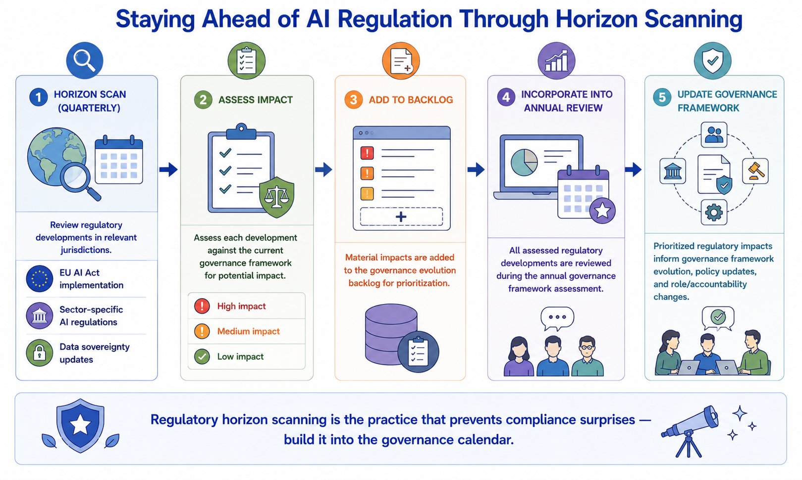
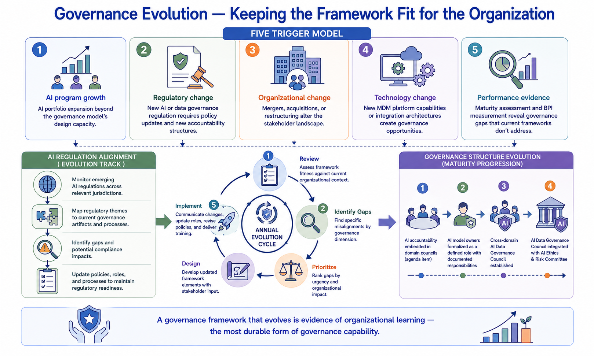

Governance Evolution
Module support notes
Governance Evolution and Organizational Culture
Governance framework evolution is most effective when it tracks alongside — rather than outpacing — the cultural evolution of the organization's relationship with data governance. A governance framework that introduces new accountability structures before the stakeholders who must fulfill those accountabilities have internalized the value of governance will face resistance that formal policy cannot overcome.
Organizations that invest in the cultural dimension of governance evolution — connecting each framework change to a visible business or AI outcome that stakeholders recognize as valuable — consistently achieve faster adoption of governance changes than those that implement new frameworks through policy mandate alone.
Tip
Before introducing any governance framework change, assess cultural readiness alongside structural readiness. Ask: do the stakeholders who will be affected by this change understand why it is needed? Have they seen evidence that the existing framework is delivering value worth protecting? A governance change introduced to stakeholders who don't yet value what exists will be treated as additional overhead, not as an evolution of something worth evolving.

Regulatory Horizon Scanning
AI regulation is evolving faster than most governance frameworks were designed to track. The EU AI Act, sector-specific AI regulations in financial services and healthcare, evolving data sovereignty requirements, and emerging guidance on AI explainability and fairness are collectively creating a regulatory environment that requires governance frameworks to evolve continuously rather than in response to specific compliance deadlines.
Organizations that build regulatory horizon scanning into their governance calendar — reviewing regulatory developments quarterly and assessing their governance implications before they become compliance requirements — consistently produce more resilient governance frameworks than those that treat regulatory adaptation as a reactive exercise triggered by compliance deadlines.
Note
Regulatory horizon scanning is the practice that prevents compliance surprises — build it into the governance calendar. A quarterly review process should cover: EU AI Act implementation developments, sector-specific AI regulation in relevant jurisdictions, data sovereignty requirement updates, and emerging explainability and fairness guidance. Each development should be assessed against the current governance framework, with material impacts added to the governance evolution backlog before they become compliance deadlines.

A governance framework that evolves is evidence of organizational learning — and the most durable form of governance capability an MDM program can develop.
